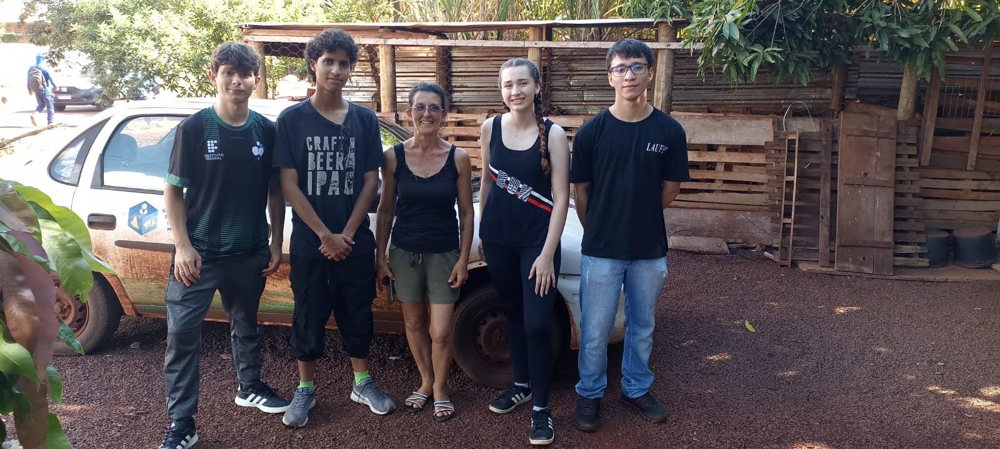

Sobre Apasbac
A Apasbac, Associação de Proteção Animal Socorro Bicho de Assis Chateaubriand, é uma Organização Não-Governamental (ONG) localizada em Assis Chateaubriand, no estado do Paraná, que se dedica à proteção e ao cuidado de animais abandonados. A entidade foi fundada em 2012 por pessoas que já atuavam individualmente na proteção de animais abandonados, atualmente é dirigida pela Luciane (Presidenta da Apasbac) e Cristiane (Vice-presidenta). A APASBAC desempenha um papel importante na comunidade, oferecendo abrigo temporário, alimentação e cuidados veterinários, buscando tutores responsáveis para os animais resgatados. Além disso, a associação promove campanhas de conscientização sobre a importância da adoção responsável e do combate aos maus-tratos.

Quais animais estão disponíveis para a adoção?
A Apasbac conta com mais de 150 animais acolhidos, mas nem todos estão aptos para a adoção. Alguns animais que precisam de um cuidado a mais muitas vezes não vão para a adoção e são cuidados pelos voluntários. Apenas cães e gatos são colocados para adoção e normalmente os gatos ficam em lares temporários, pois, não há estrutura onde acolhe-los. Para adotar um animal é apenas necessário amor e responsabilidade para dar uma vida melhor para cada animalzinho.
Por que adotar e/ou ajudar?
A Apasbac não recebe grande renda do governo, então a estrutura da Apasbac não é a malhor para os animais, muitas vezes os voluntários precisam tirar dinheiro do próprio bolso para conseguir dar comida e uma estrutura um pouco melhor para os animais. A associação além de precisar de doações e adoções, necessita de mais voluntários para ajudar na demandas dos animais. Adotando um animal você proporciona um lugar melhor para ele, com amor e amizade que durará a vida toda, doando você dá uma estrutura melhor para aqueles animais que ainda não têm uma família e se voluntariando contribui a alcançar um maior cuidado para os animais acolhidos. =^.^=